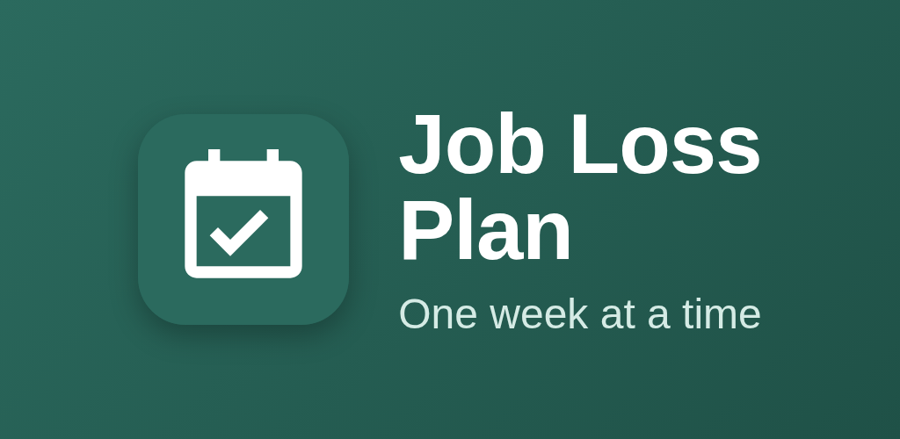
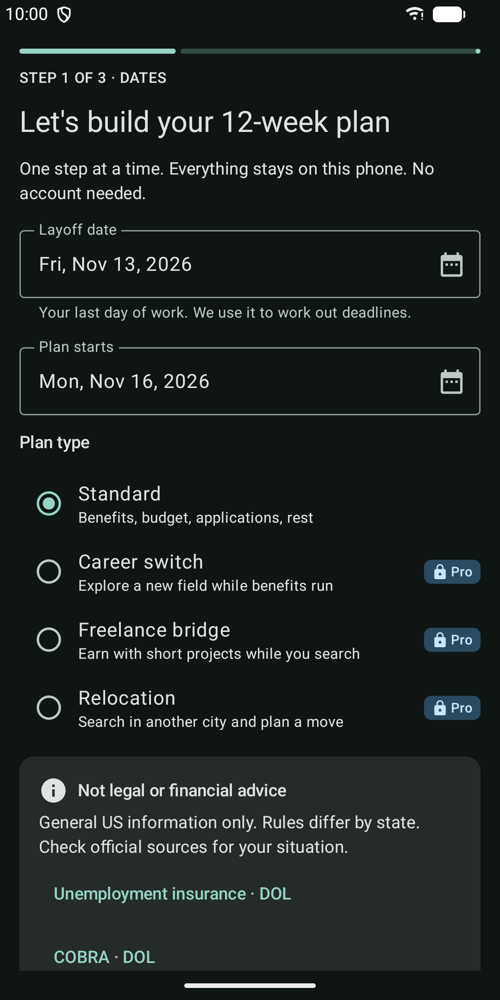
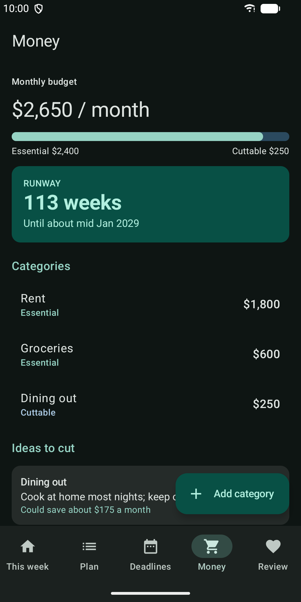
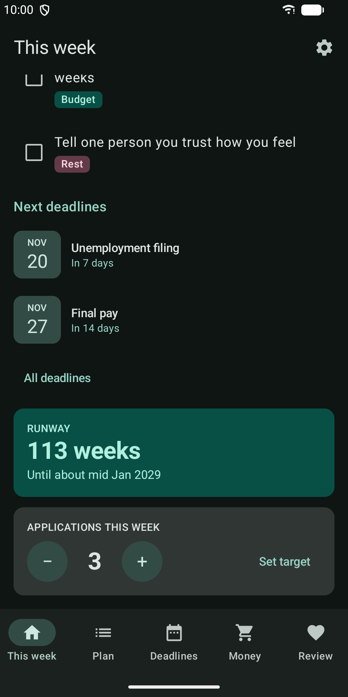
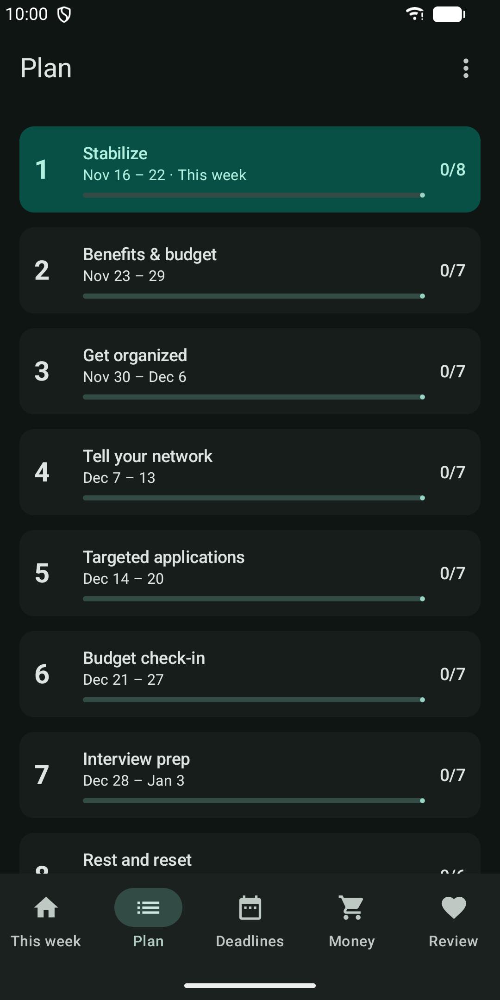
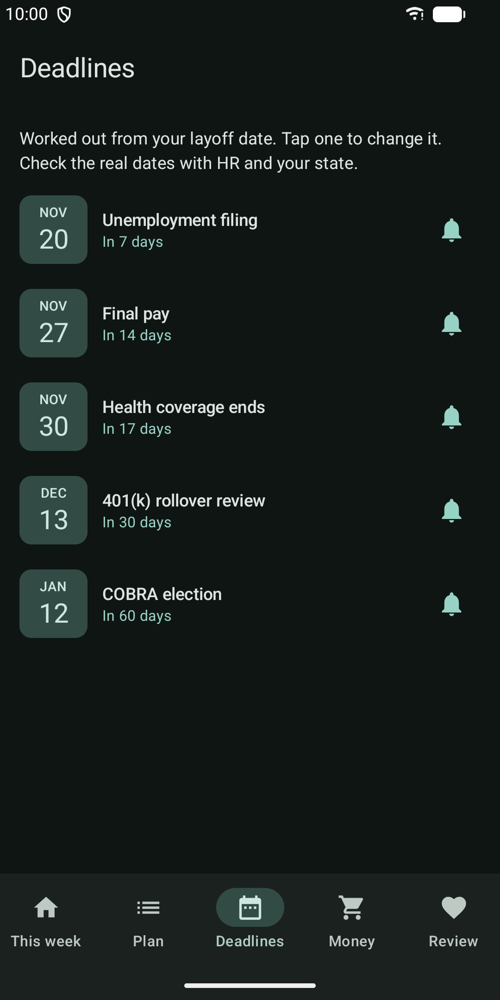
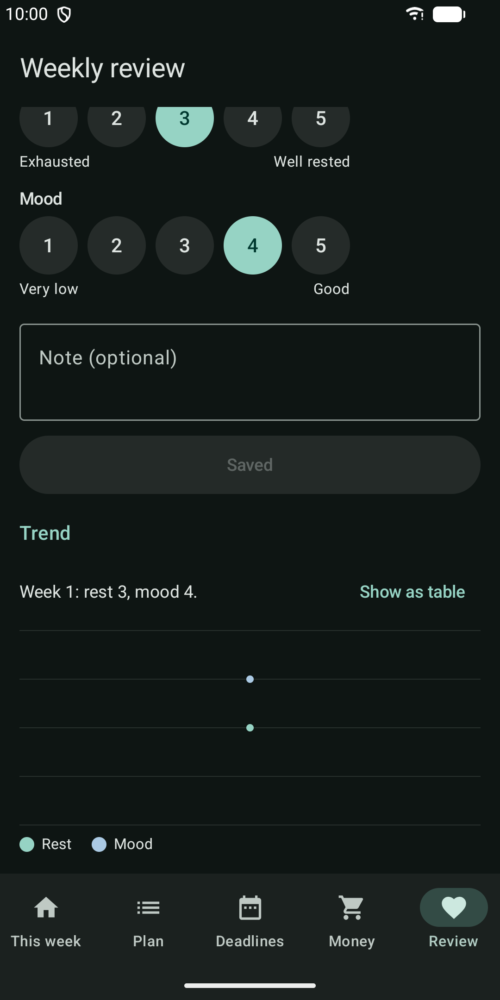
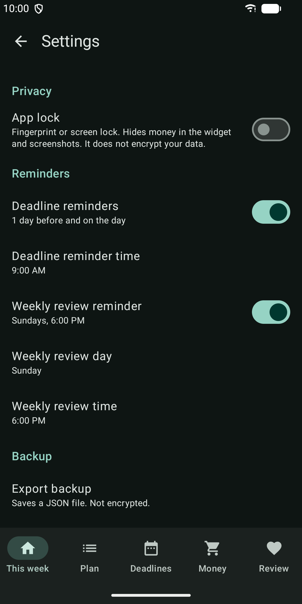

Job Loss Plan: 12-Week Guide
Laid off? A calm 12-week checklist with deadlines, budget and runway math.








About
Just lost your job? Take it one week at a time. Job Loss Plan gives you a clear 12-week plan for the weeks after a layoff in the US. Each week has a short checklist that covers severance, benefits, your budget, job applications and rest. A quick weekly check-in helps you see how you are doing. There is no account to create. Everything you enter stays on your phone. WHAT YOU GET - A plan for every week. "This week" shows what matters now. The overview shows all 12 weeks and your progress. - Tasks you control. Edit, add, delete and reorder tasks, or restore the default tasks for a week. - Key deadlines worked out from your layoff date: unemployment filing, final pay, 401(k) rollover review, end of health coverage and the COBRA election window. You can change any date to match your paperwork. - Reminders before each deadline and a weekly review reminder. Notifications never show amounts. - A simple monthly budget. Mark each cost as essential or cuttable and see ideas for what to trim. - Runway calculator. See how many weeks your savings, severance and unemployment benefit can cover, and how much longer if you cut back. - Weekly review. Rate your rest and mood from 1 to 5, add a note and watch the trend. - Application counter with an optional weekly target. It is a simple count, not a job tracker. - After week 12, add 4 more weeks or start a new plan. Old plans are kept read-only. - Home screen widget with the current week, open tasks, next deadline and runway. - Backup and restore. Export your data to a file you choose and import it again later. PRIVACY - The app does not use the internet. It has no analytics and no tracking. - Optional app lock with your fingerprint or screen lock. While it is on, screenshots of money screens are blocked and the widget hides your runway. - Your data is not included in cloud backups. Backup files are plain text, so keep them somewhere private. PHONES AND TABLETS Light and dark mode follow your system. Touch targets are large and screen reader labels are included. On tablets, the plan and the budget use side-by-side views. PLAN PRO Plan Pro is a one-time purchase in the app. It adds a PDF export of your plan, budget and reviews, and three extra plan templates: Career switch, Freelance bridge and Relocation. The plan, deadlines, budget, runway, reviews, reminders, widget and backup do not need a purchase. IMPORTANT Job Loss Plan offers general US information only. It is not legal or financial advice. Rules differ by state, so check official sources such as the U.S. Department of Labor and HealthCare.gov for your situation.